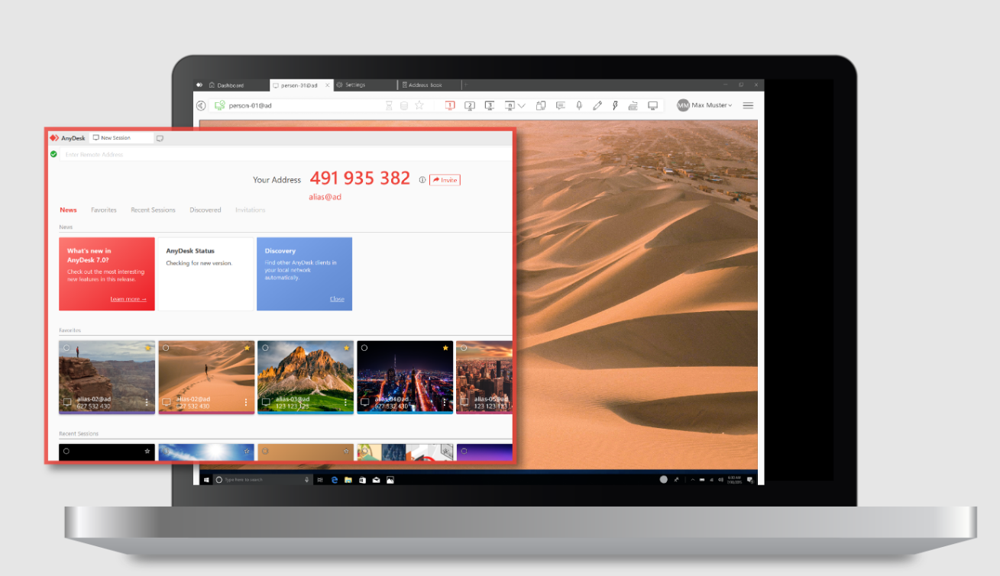

Asistencia Remota
Soporte en vivo
Seguí estos pasos para que podamos ayudarte en minutos
1. Descargá AnyDesk
Una vez descargado, abrí el archivo para ejecutarlo. Generalmente lo vas a encontrar en la carpeta Descargas.
⬇ Descargar AnyDesk2. Abrí el programa
No hace falta instalarlo, solo ejecutalo.
Enviános el número de ID que aparece en la pantalla. Con ese dato podemos conectarnos y ayudarte.
3. Enviá tu ID
Uno de nuestros técnicos se va a comunicar con vos para continuar el servicio.
Te recomendamos guardar tu trabajo y cerrar programas antes de la conexión.

Ejemplo de dónde encontrar tu ID en AnyDesk
💬 Enviar ID por WhatsApp⚡ Atención inmediata disponible ahora